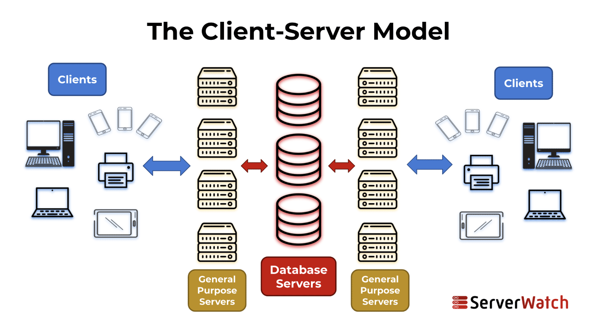
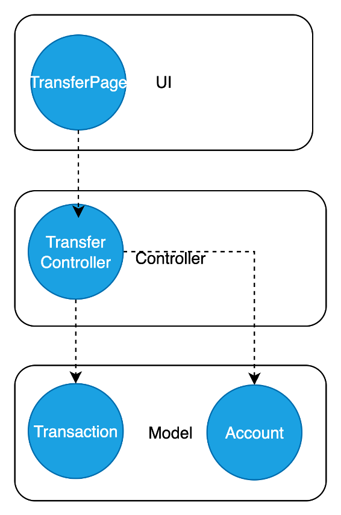
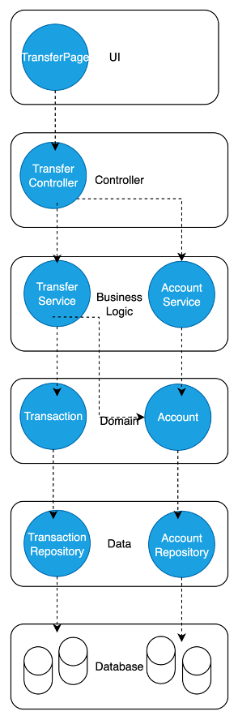
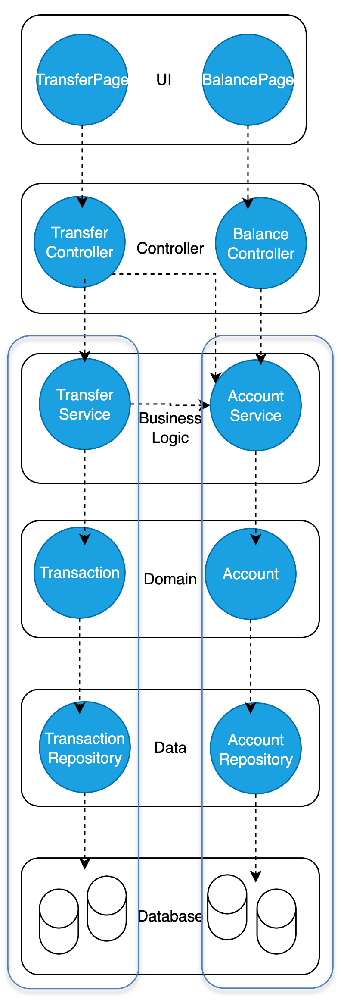
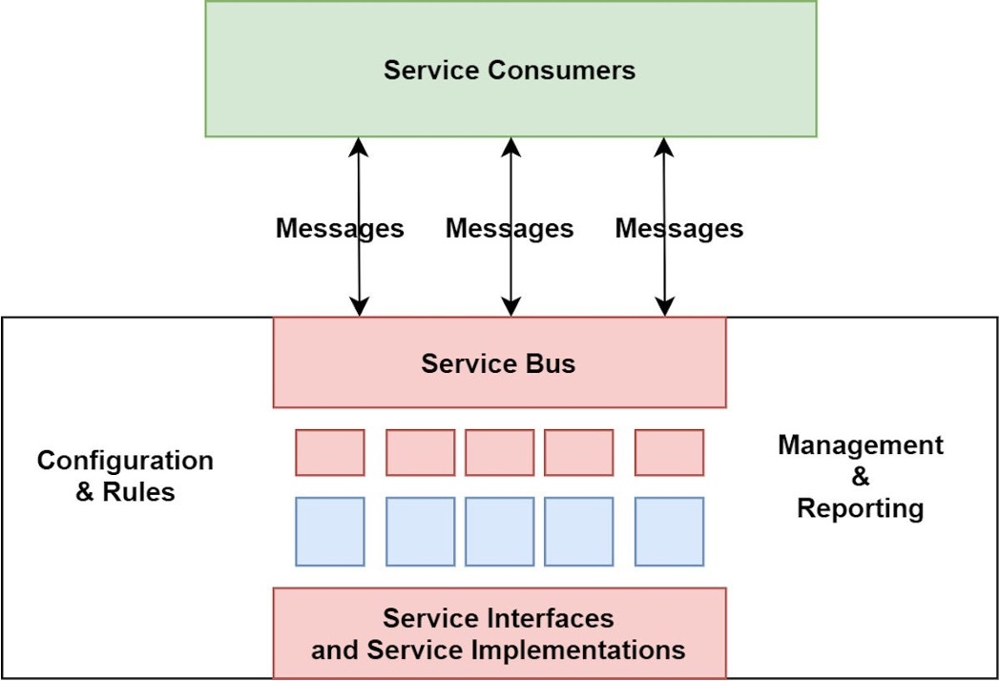
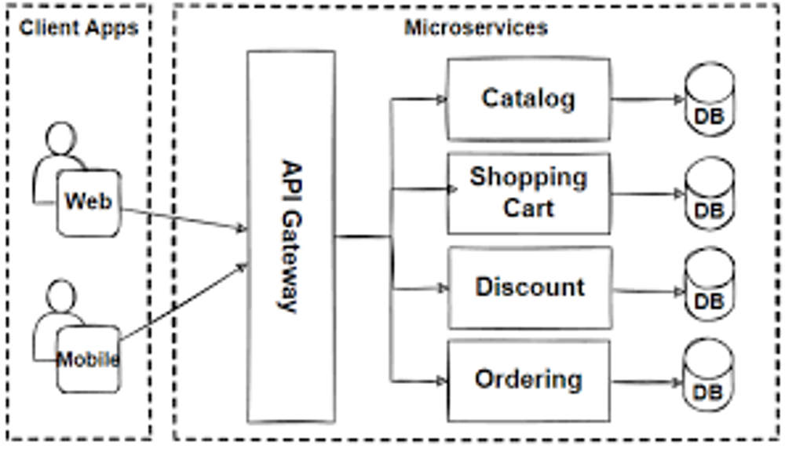
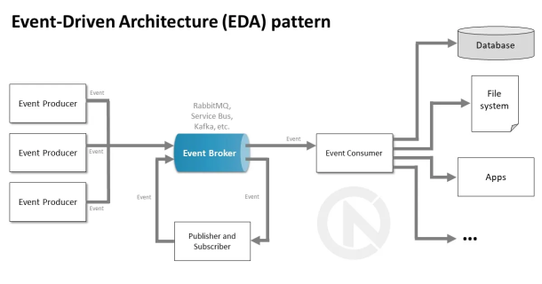

50.003 - Software Architecture¶
Learning Outcomes¶
-
Identify the MVC components from the UML design diagrams
-
Extend MVC architecture model to a layered architecture model
-
Describe how Service Oriented and Event Driven architectures help to scale and reuse software systems
What is Software Architecture?¶
The high-level structure of software components and their interactions to meet functional and non-functional goals (scalability, extendability, security etc.) is referred to as the software architecture.
The following are the main features of software architecture.
- Groups classes into larger parts
- Defines layers, modules, services
- Guides deployment and scalability
When you have a detailed design with your UML, software architecture adds value by 1. Defining how your system’s parts fit together 1. Bridging detailed UML design to real code structure 1. Ensuring maintainability, scalability, and clarity of the final system
How to derive a software architecture?¶
The Architectures You Know¶
Client-Server Architecture¶
Client-Server architecture is the most basic and common software architecture. Any web app/ mobile app has the client part and the server part. Client part collects inputs from the user and shows the outputs to the user. Server part takes care of other business logic and data handling part.

Model-View-Controller Architecture (MVC)¶
In order to better manage the server, it can be further split into controller and model parts while keeping client as the view. In the javascript applications you developed before, we introduced this architecture.
View was the front-end part you implemented using react. Controller was the routes classes which routed the http requests towards models and routed the responses from models towards the browser. Model is the part containing business logic and data storage/retrieval/processing part.
How to derive Software Architecture for a generic design?¶
By using the UML diagrams below, we can extract insights to derive the software architecture.
- Use case diagram: User Goals
- Domain class diagram: Model
- Sequence diagram: View ↔ Controller ↔ Model
- Solution class diagram: Concrete MVC classes
Since we followed the MVC architecture in mind during the UML design process, we can easily extract MVC components from Sequence diagram and Solution class diagram.
According to Sequence diagram, we can group the UI components (first contact to user) to view layer, next set of components which connect the UI components to domain components to controller layer, and domain and the after components to the model layer.
Referring to the solution class diagram we can easily start from the UI class and follow the dependancy arrows to find the controller classes and model classes. After one dependancy step from UI, we find controller classes and after next step we find the model classes.

Layered Architecture¶
MVC architecture works well for UI driven projects. When we have many domain classes, it is better to split the model layer for easier management.
The model layer above can be split into more meaningful layers namely, Service layer, Domain layer, Data layer, and Database layer. For a given functionality we will have a corresponding Service classes and data classes, which map to the domain classes.
In the case of TransferFunds
- UI : TransferPage
- Application: TransferController
- Service: AccountService, TransactionService
- Domain: Account, Transaction
- Data: AccountRepository, TransactionRepository
- Database: Tables from the database design

A service is identified by organizing the controller methods from the MVC style sequence diagram.
In the example of Transfer Funds, Transfer Controller uses Account model for check balance, and Transaction model for the transfer.

To make the service stacks independent, we can define unique owner from the service layer to each model. If a service needs to access models that it does not own, it should do it through service which owns the model of interest. These independant service stacks may be turned into micro services.
In the example of Transfer Funds, Transaction model is owned by Transfer service and the Account model is owned by the Account service. When Transfer Service needs to access the Account model, it has to do it through the Account Service.

It is possible to integrate multiple use cases in a single layered architecture diagram as above.
Here, Balance Page use case is also added to the UI and the Corresponding controller is added to the Controller layer. After that, Balance Controller also reuses the existing services. If the added controller uses a new model, then we need to introduce a new service.
Refining with each use case, will result in the final service layered architecture diagram which shows UI components and controllers for each use case.
There will be a service stack defined for each domain model class. Controllers can connect to one or more services. The services can interact with each other.
Other Software Architectures¶
Service-Oriented-Architecture¶
With the development of many software products which are reusable, software architectures also evolved.
In case of larger enterprise systems, the sub systems like Core-banking Service, Loan Service and Card Service need frequent communication to perform major tasks. The number of direct communication channels substantially increases with the number of subsystems involved. In order to reduce the overhead of these direct communication, an intermediary called Enterprise Service Bus (ESB) is introduced. This architectural design pattern is referred to as System-Oriented architecture.
ESB set different access points (end points) to each service in the company. Any service can exchange data with another service regardless of the data formats used by the systems. ESB helps to translate between data formats.
Scaling: Services are decoupled since, direct communication is replaced by the ESB with well defined interfaces. As long as the ESB is scaled, integrated systems can be scaled. However ESB can be a single point of failure and a bottle neck due to it being centralized. Using cloud technologies which support automatic scaling has been able to address the bottle neck for some extent.
Extensions: The logic inside ESB can be extended to support evolving UI, Database technologies as well as data formats.
Security: The data and services should be properly authorized among developers and end users. Thorough authentication and authorization mechanisms followed by extensive testing are necessary to ensure data and service security.

Microservices Architecture¶
Microservices architecture is one of the most commonly used architectural design pattern in the current era. Microservices are stateless (do not store any data after running) lightweight services with a single responsibility which can run and be deployed independantly (Can even be deployed in different platforms).
For example, any method belonging to any layer in the layered architecture can be a microservice on its own. These microservices communicate with each other via API calls (Ex: REST) in contrast to using a central intermediary like ESB.
Extensions: An application built with microservices can be easily extended (Ex: new UI or new DB) if proper abstraction is used.
Scaling: Each microservice can easily be scaled up or down with the help of cloud technologies.
Security: The data and services should be properly authorized among developers and end users. Thorough authentication and authorization mechanisms followed by extensive testing are necessary to ensure data and service security.

Event-Driven Architecture¶
Event-Driven architectural design pattern consider two types of system components namely event producers and event consumers. Event producers emit events for event producers to act upon. For example, OrderService can emit event so that PaymentHandler, NotificationHandler and AnalyticsHandler can act upon it. The events are added to an event queue managed by the event broker and handled in asynchronous manner implying that the services are loosely coupled in contrast to services being called in sequence. Event-Driven designs consider multiple usecases at once since it considers all the services which can act upon events.
Extendability: To extend a system in Event-Driven architecture, new events can be introduced to be consumed by the existing consumers or newly built consumers while updating the event broker. If we need to integrate existing services (non event-driven) to event-driven architecture we need to update the service to emit events while updating the event broker.
Scalability: Using the cloud technologies, multiple instances for each event consumer and producer can be automatically created.
Security: While supporting many event emissions, maintaining integrity and access controlling is a challenge in Event-Driven architecture. Using digital signatures, having least privileges for events helps to make Event-Driven architectural implementations secure.

Summary¶
Client-Server, Mode-View-Controller, Layered architecture are most common architectural patterns in software systems.
With the rise of reusable software systems and scaling requirements, new architectural patterns evolved to support extendability and scalability. Service-Oriented Architecture, Microservices Architecture and Event-Driven architecture are some of the widely used architectural patterns. We are able to see Client-Server, Layered architectural sub patterns inside these new architectures.
For each of these new architectural patterns, there are unique security challenges present. Customized Authentition and Authorization methods are present to mitigate those security challenges.
Choice of the architectural patterns for your project depends on the current trends, specific requirements and your organizational strategy.
References¶
- https://www.serverwatch.com/guides/client-server-model/
- https://www.infoworld.com/article/2158174/what-is-service-oriented-architecture.html
-
https://medium.com/design-microservices-architecture-with-patterns/microservices-architecture-for-enterprise-large-scaled-application-825436c9a78a
-
https://redborder.com/understanding-event-driven-architecture-and-combinations-in-software-engineering/